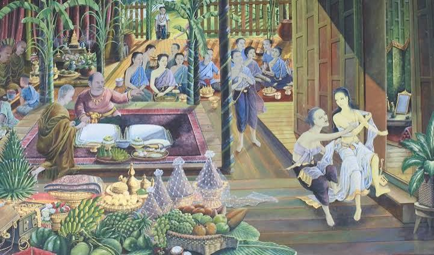

วิชาภาษาไทย

"ขุนช้างขุนแผน" เป็นวรรณคดีไทยประเภทนิทานคำกลอนที่มีความยาวที่สุดเรื่องหนึ่งของไทย เล่าเรื่องความรักสามเส้าระหว่างขุนแผน ขุนช้าง และนางวันทอง เกิดขึ้นในสมัยกรุงศรีอยุธยา บทประพันธ์นี้แต่งขึ้นจากการเล่าเรื่องปากต่อปากที่สืบทอดกันมานานก่อนจะถูกรวบรวมและปรับปรุงในสมัยรัตนโกสินทร์ เนื้อเรื่องสะท้อนวิถีชีวิต ค่านิยม และกฎเกณฑ์ทางสังคมของคนไทยในอดีต เช่น ระบบชายหลายเมีย ความกล้าหาญของนักรบ และบทบาทของผู้หญิงในสังคม ตัวละครนางวันทองยังเป็นที่มาของสำนวน "วันทองสองใจ" ที่ใช้เปรียบเปรยผู้ที่ไม่อาจตัดสินใจเลือกฝ่ายใดฝ่ายหนึ่งได้อย่างเด็ดขาดจนถึงปัจจุบัน